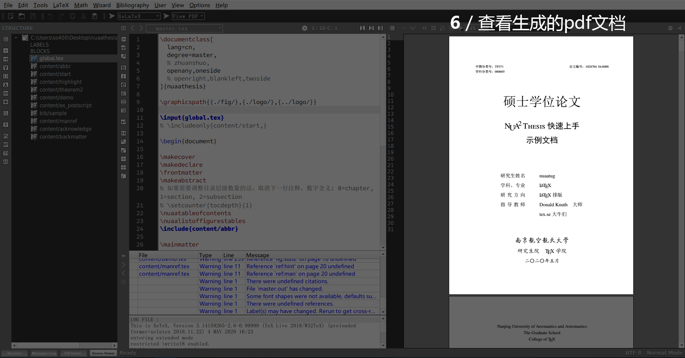

使用 Microsoft Word 来写毕业论文操作简单，所见即所得。但是在文档涉及大量图片、公式时，文档启动、翻页、保存过程就不是很流畅。此外，学位论文的格式要求繁琐，比如字体、段落间隔、缩进、公式编号、图片排版之类的问题常常让人心力憔悴。LaTeX 模板的出现就是将我们从诸如此类的体力劳动上解放出来，将注意力放在论文内容上。
不用担心，虽然它听起来比较陌生，但你只需要花上几个小时就可以掌握它 90%的用法，节省你未来几十个小时的体力劳动时间。本人研究生学位论文使用 LaTeX 模板编写，经历了查重、提交学院、提交图书馆和打印过程，实践证明各个流程都无障碍，体验顺滑。
1 TeX、LaTeX、TeX Live
使用之前我们先花几分钟了解一些概念，这将有助于提升你对这个模板的掌控感。
TeX 是一个引擎。它定义了命令与文档格式的对应关系，其作用是将用户输入的命令生成格式化的文档。（TeX 引擎有：Knuth TeX、e-TeX、pdfTeX、LuaTeX、XeTeX、pTeX、upTeX、e-upTeX、pTeX-ng，引擎的概念可类比 C 语言的 gcc）
LaTeX 是一种宏语言。它将 TeX 的某些命令封装成一种宏格式，用户不需要输入 TeX 的底层命令，只需输入按照这种宏语言输入宏。LaTeX 将宏解释成 TeX 命令，然后交给 TeX 引擎生成格式化的文档。（其他宏语言有：plain TeX，LaTeX 是当今使用最为广泛的宏语言。）
TeX Live 是 TeX 的发行版本。它包含了若干 TeX 引擎和若干宏语言，同时提供一个命令编辑器（TeX works），使得用户可以方便完成编辑命令、选择宏语言、调用引擎生成文档的流程。（其他 TeX 发行版本有：TeXStudio）
引擎和宏语言组合成一种格式，生成文档前，我们需要告诉软件我在使用什么格式。常见的格式有
（引擎 + 宏语言 > 格式）
- e-TeX + LaTeX > LaTeX
- pdfTeX + LaTeX > pdfLaTeX
- LuaTeX + LaTeX > LuaLaTeX
- XeTeX + LaTeX > XeLaTeX
- pTeX + LaTeX > pLaTeX
- upTeX + LaTeX > upLaTeX
- e-upTeX + LaTeX > e-upLaTeX
- pTeX-ng + LaTeX > pLaTeX-ng
2 NUA2 Thesis
基于上述的引擎、宏语言等，南航民间校友开发了一套模板：南京航空航天大学（非官方）学位论文 LaTeX 模板（下面简称为 NUA2 Thesis），开源发布在 Github 上。据悉是由几名南航校友 2017 年左右费劲力气倒腾出来的，模板参照南航官方的 《本科毕业设计（论文）撰写格式要求》 和 《南京航空航天大学研究生学位论文撰写要求》（2015 年 4 月修订） 制作。
前人栽树，后人乘凉。感谢校友们的辛勤劳动~
这套模板提供了详细的使用说明文档，本人写的此系列教程多是依据这些使用文档以及网上的教程编写的，如果在使用过程中碰到本系列教程未提到的问题，请不要担心，查阅文档或网上搜索一般都能解决你的问题。
3 生成你的第一篇文档
准备工作：
- 下载并安装 TeX Live
- 下载并安装 Texmaker
- 下载 NUA2 Thesis
根据你的网络状态，这两个工作可能花费几分钟到几个小时的时间，不要着急，期间你可以去做其他事情。
NUA2 Thesis 文件夹内部有三个文件夹 demo_chs、demo_en 和 demo_ja，一般我们都是使用中文写论文，所以我们只用关心 demo_chs 这个文件夹里面的内容：
- \bib：存放参考文献目录
- \content：存放子章节
- \fig：存放论文图
- *.tex：论文源文件
- *.pdf：最终生成的文档
- *.bst：格式定义
- *.cls：格式定义
.tex 文件是论文编辑的源文件，我们在。tex 文件中输入论文，TeX 引擎会将。tex 文件渲染成最终的 pdf 文档。
用 Texmaker 打开 master.tex 文件，master.tex 相当于 C 语言里的 main() 函数。我们先不细究这个文件里面各行代码的意思，而选用一种 TeX 引擎渲染 master.tex 来生成文档获得直观的了解。
按照 NUA2 Thesis 的指导，我们（1）使用XeLaTeX格式，（2）点击Run，（3）运行十几秒之后，提示无报错就说明生成成功，（4）选择View pdf，（5）点击View就可以在右侧看到生成的 pdf 文档了。图解如下：

至此验证完毕：LaTeX 软件安装正常、模板运行正常，接下来要做的就是往这个模板里填充内容，正式开始写论文。